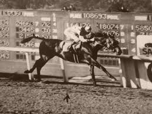
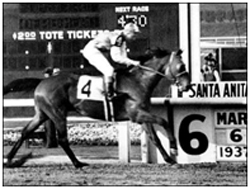

For most us living in India, the name Seabiscuit is unheard of, though this is a very popular character and legend in the United States of America. It is a legend of a thoroughbred champion race horse (born 1933 - rested 1947) that was unsuccessful in his earlier races but finished his career with an astounding success in terms of number of races won and the amount of prize money he collected.
It is said that Seabiscuit finished last in his first seventeen races before beginning to win! By the time of his retirement, he was the most respected race horse who won almost every race he ran in
.

his spirit of Seabiscuit is the cornerstone of corporate culture at our organization.To us, this name symbolizes courage, hope and steadfastness. It invigorates in us the 'Never Say Die' spirit which is essential for succeeding in everyday life and especially in a stiff business competition.
In our business ventures, we seek to emulate the successes and glory achieved by a legend that started small but finished like a true champion!!